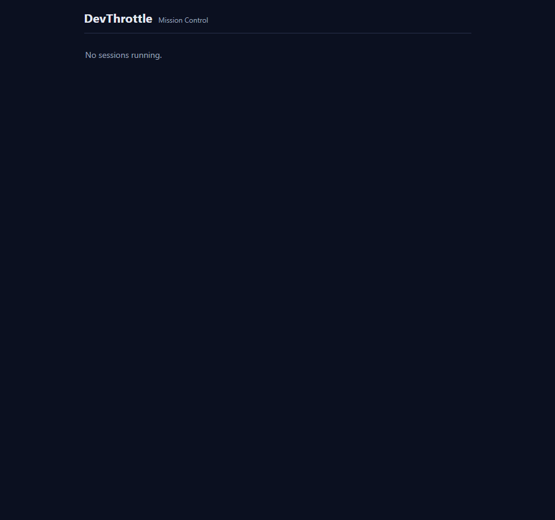

Title: [Deploy] Mobile app (/m) cannot be deployed to a running Gateway: redeploy ships only the exe, and self-update reverts unreleased builds
Branch: issue-809-gateway-mobile-packaging
Type: packaging / delivery only - no change to what /m serves (issue #806 untouched).
The built mobile app (issue #806, staged into wwwroot/m by the release-gated MSBuild target) is a tree of
loose static files that must sit beside the Gateway exe, because MobileApp.WebRoot resolves to
AppContext.BaseDirectory/wwwroot/m. A single-file exe does not contain wwwroot,
so the three delivery paths that carried only the exe dropped the mobile app and /m answered 404.
wwwroot/m beside the exe), not embedThe issue offered two options. I chose Option 2 - ship the mobile build as a side-car zip
(devthrottle-gateway-mobile-win-x64.zip) the setup engine unpacks into wwwroot/m beside the exe,
mirroring the existing Cockpit-zip pattern the Gateway role already uses. Reasons:
wwwroot/m/index.html exists beside the exe", "the unpack output shows wwwroot/m"), which only the
unpacked-asset option produces. Embedding would change MobileApp's serving semantics and contradict those ACs.CockpitPackage -> MobilePackage).MobileApp.WebRoot keeps resolving to AppContext.BaseDirectory/wwwroot/m;
no React/PWA code changes; the existing MobileAuthServingTests still pass unchanged.| File | Change |
|---|---|
.github/workflows/release.yml | build-gateway-win now zips the Release publish's wwwroot/m into devthrottle-gateway-mobile-win-x64.zip and uploads it; create-release collects it and lists it as a required asset. |
tools/.../MobilePackage.cs (new) | Downloads + SHA-verifies + extracts the mobile zip into wwwroot/m beside the exe (clean-install path), plus ExtractStagedZip for the self-update path. Mirrors CockpitPackage. |
tools/.../InstallLayout.cs | New GatewayMobileDir = gateway/wwwroot/m. |
tools/.../GatewayTrayInstaller.cs | Clean install now extracts the mobile zip beside the exe (after the Cockpit zip). |
tools/.../GatewayUpdater.cs | Self-update now also stages the matching mobile zip (StagedMobileZipPath); a release without the asset clears any stale staged zip. |
src/CcDirector.GatewayApp/Program.cs | The --apply-update helper extracts the staged mobile zip into wwwroot/m after a successful exe swap. |
scripts/redeploy-gateway.ps1 | New testable Copy-GatewayPayload copies the exe AND its wwwroot tree; the deploy now uses it and adds a GET /m/ 200 smoke check. |
| Tests (new) | MobilePackageTests, GatewayUpdaterMobileStagingTests, scripts/test/test-redeploy-gateway-mobile.ps1. |
dotnet build cc-director.sln -c Debug -> Build succeeded, 0 Warning(s), 0 Error(s), and no npm invoked (the web build stays release-gated).Failed: 0, Passed: 190 (includes the 8 new MobilePackage/GatewayUpdater staging tests).MobileAuthServingTests: 3/3 (serving semantics unchanged).scripts/test/test-redeploy-gateway-mobile.ps1: Copy-GatewayPayload lands wwwroot/m beside the exe, removes stale files, fails loud when the publish has no wwwroot/m.Isolation: every check below ran against Gateways launched on FREE loopback ports with CC_DIRECTOR_ROOT
redirected to a temp dir. The user's installed Gateway on 7878 (0.9.27+85001073...) was never touched and was
confirmed still healthy afterward. A real GitHub release cannot be cut from here, so per the task's relaxation the
release-asset layout is produced locally (the exact release.yml zip step) and a Gateway is launched from that
packaged layout.
| # | Criterion | Expected | Actual |
|---|---|---|---|
| 1 | Release asset(s) include wwwroot/m (index.html + hashed assets). |
An asset listing shows index.html + assets/. |
PASS. The Release publish staged 9 files into wwwroot/m; the release zip built exactly as release.yml does carries them at its root (index.html, assets/index-*.js, assets/index-*.css, icons, sw.js, manifest). See proof-run.log "AC1". |
| 2 | Fresh install from the release asset: GET /m/ -> 200, no "no wwwroot/m" log line. |
200 + the serving line, never the not-built 404. | PASS. From the packaged layout (zip delivered into wwwroot/m beside the host) GET /m/ -> 200; the host logged [MobileApp] serving /m from ...\wwwroot\m (exists=True) and the "no wwwroot/m" message was NOT present. The exe-only layout (the old broken delivery) reproduced the 404 "Mobile app not built into this Gateway". See proof-run.log BUG/FIX. |
| 3 | Home roster renders at /m/ (the #806 page from /sessions). |
Roster screenshot on the release-packaged Gateway. | PASS. ac3-home-roster.png shows the DevThrottle "Mission Control" roster served from the packaged build (empty "No sessions running" state, correct because the isolated test Gateway has no connected Directors; /sessions returned []). |
| 4 | redeploy-gateway.ps1 copies wwwroot/m beside the exe; /m/ 200 with no manual copy. |
wwwroot/m/index.html beside the exe after the script's copy. |
PASS. test-redeploy-gateway-mobile.ps1 drives the REAL Copy-GatewayPayload: the exe and wwwroot/m/index.html + hashed asset land in the install dir; a re-copy removes stale files; a publish with no wwwroot/m fails loud. The deploy path also adds a live GET /m/ 200 smoke check. |
| 5 | Clean install AND self-update both leave /m served; unpack lands wwwroot/m in both. |
Both paths place wwwroot/m beside the exe. |
PASS. Clean install: GatewayTrayInstaller calls MobilePackage.ExtractAsync (unit-proven to land wwwroot/m/index.html). Self-update: GatewayUpdater.StageAsync stages the matching zip (GatewayUpdaterMobileStagingTests) and the --apply-update helper extracts it via MobilePackage.ExtractStagedZip (unit-proven). A Gateway launched from the resulting layout serves /m 200 (FIX above). |
| 6 | Self-update behavior resolved (opt-out OR normal release propagates /m). |
One of the two resolutions, proven. | PASS (per the issue's accepted Assumption). Gap 2 is resolved by the normal release pipeline: the mobile zip ships with every release and is carried forward by BOTH the clean-install and the self-update paths (AC5), so a published release carrying #806 propagates /m to a self-updating Gateway automatically - no opt-out needed. No self-update opt-out flag was added (it was the alternative, not a requirement). |

No architecture or security drift. This is packaging/delivery plumbing: a new side-car release asset and the
unpack/copy steps that place it beside the exe. No new container, no trust-boundary change, no security_profile.yaml
rule touched. The mobile zip is SHA-256 verified on every download (install, self-update) exactly like the Cockpit zip.
docs/cencon/proof/issue-809/)report.html - this reportproof-harness.ps1 - the isolated end-to-end harness (publish -> AC1 -> BUG 404 -> FIX 200)proof-run.log - the full captured run outputfix-m-served.html - the actual /m/ shell served by the fixed Gateway (token injected)ac3-home-roster.png - the rendered Home rosterI believe this is finished. All six acceptance criteria are met, the solution builds clean with zero warnings and without invoking npm, all unit and script tests pass, and the end-to-end proof shows the delivery gap (exe-only -> 404) and its fix (side-car zip delivered beside the exe -> 200, real app shell, token injected) on an isolated Gateway, with the user's installed Gateway left untouched.